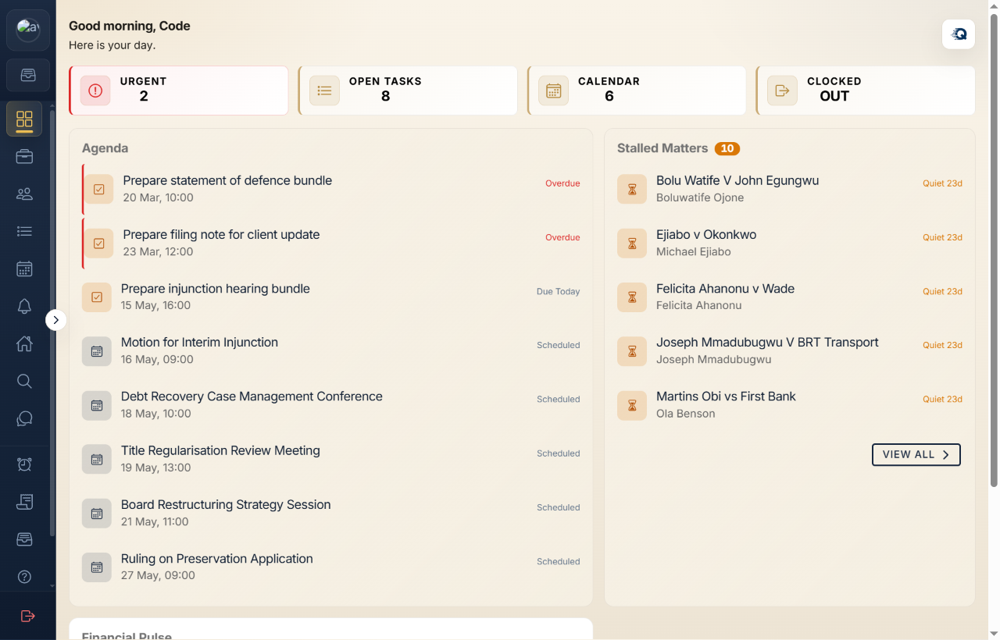
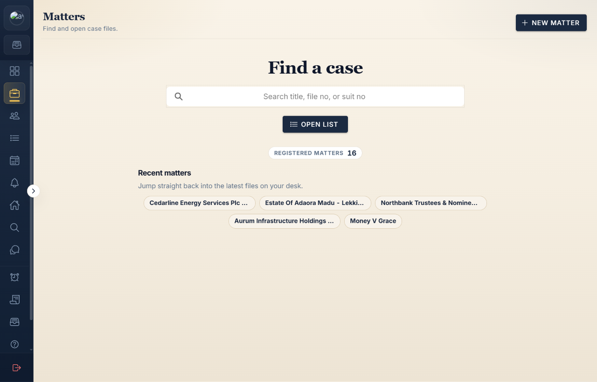

What it is
QuickProLaw is built around the real rhythm of legal work: matters come in, dates move, documents need context, staff need assignments, and the firm needs visibility into fees, tasks, and deadlines.
Product record
Legal operations software for firms and legal departments. The product brings matters, court dates, tasks, documents, staff activity, finance, and signing workflows into one operating workspace.
Product views
QuickProLaw has a public front, but the real proof is in the matter, task, deadline, and finance workflows behind the app.



QuickProLaw is built around the real rhythm of legal work: matters come in, dates move, documents need context, staff need assignments, and the firm needs visibility into fees, tasks, and deadlines.
The codebase uses Angular, Ionic-style app surfaces, Firebase services, Express APIs, Cloud Run deployment paths, and shared libraries for product models and client services. It also includes integrations around file handling, Microsoft auth, and signing-package workflows.
The hard part is not drawing a dashboard. It is deciding which legal objects deserve first-class structure, which actions need auditability, and how to make a busy firm see what matters today without losing the document trail.